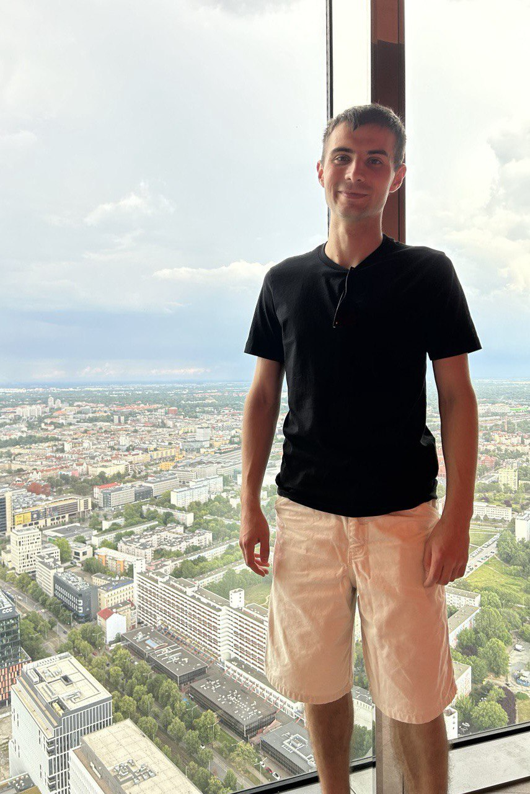

I work at the intersection of robotics and machine learning — building vision systems and ML models for real production environments. Background in industrial engineering, currently focused on ML engineering.
I started in industrial automation — designing machines and robotic workstations. Over time I moved into machine learning applied to manufacturing: vision systems, predictive quality, anomaly detection in time series.
Most of my projects come from real production problems — not datasets from Kaggle, but data collected from actual CNC machines and production lines.
Currently finishing my thesis on anomaly detection in time series and deepening my knowledge through Deep Learning courses.
Real projects from production environments and personal ML research.
Vision system built from scratch to detect burrs in oil channels of machined parts. Deployed on a production line — detects defects that are invisible to the naked eye.
Vision system that checks whether a screw is present in a part before the next operation — preventing collisions during CNC machining.
NLP-based assistant that interprets Fanuc alarm codes and guides operators through maintenance steps — reducing machine downtime.
Predicting surface flatness of a camhousing after OP20 based on measurements from OP10. Tested Random Forest, KNN, Gradient Boosting and Linear Regression on 95 real production samples.
Master's thesis project. Detecting anomalies in industrial time series data using deep learning. The largest ML project I've worked on so far — currently in progress.
Assignments and projects from Deep Learning courses — CNNs, RNNs, sequence models and generative models. Practical implementations from scratch.
Open to ML engineering roles, robotics AI projects, and interesting problems in industrial automation.